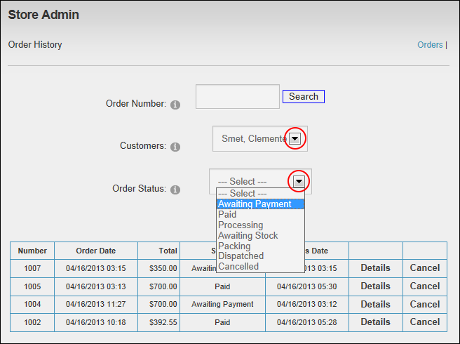

Filtering Customer Orders
How to filter customer orders by customer or order status using the Store Admin module.
- On the Store Admin module, click the Orders link. This displays the Order History page.
- Select one of these filters:
- At Customers, select to view all orders placed by the selected customer.
- At Order Status, select to view all orders set to the selected status. Available options are: Awaiting Payment, Paid, Processing, Awaiting Stock, Packing, Dispatched, or Canceled.

- Optional. Click the Details link beside an order to view more details and/or modify the order.